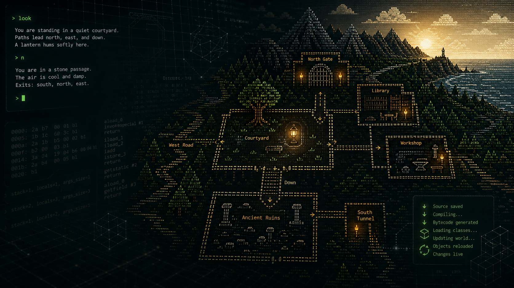

Runtime
Engine-owned world concepts: worlds, places, links, entities, containment, capabilities, players, sessions, personas, and deterministic scheduling.

Open-source LPC worlds on the JVM
A modern Java-native platform for building and playing text-only, interactive, multiplayer worlds in the LPMUD tradition: live LPC content hosted inside a JVMud engine built around places, entities, personas, persistence, time, and presence.
JVMud compiles LPC-authored game content to JVM classes and hosts it inside an engine built around the core features of MUD: Game, Text, Interactive, Multiplayer, World, Persistence, Temporality, and Presence. Check out the Glossary to learn more!
The repository contains a Java runtime, an LPC compiler, a local admin CLI, a Telnet-capable game server, the native LPMuseum landing mudlib, and legacy mudlib content used to drive compatibility work.
Engine-owned world concepts: worlds, places, links, entities, containment, capabilities, players, sessions, personas, and deterministic scheduling.
Scanner, preprocessor, parser, semantic analysis, typed IR, bytecode generation, efun contracts, generated-code helpers, and LPC runtime loading.
A single-user admin shell for filesystem/object work, plus a Telnet server path that starts in LPMuseum and can hand players into LP245 exhibit content for live compatibility testing.
JVMud is early-stage engine work with a Maven-backed baseline, a buildable runtime module, a live Telnet path, and an LPC compiler that is being expanded against real mudlib transcripts. Compatibility work is deliberately incremental and preservation-first.
mvn test
./jvmud-admin
./jvmud-startThe user manual collects the current JVMud guide in a browsable web page with a matching PDF for offline reading.
Generated Javadocs publish the current compiler and engine contracts: runtime world primitives, mudlib boundary declarations, compiler pipeline entry points, LPC runtime loading, and efun registration.